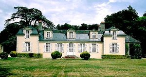
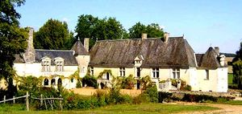
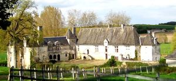
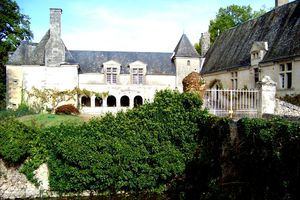
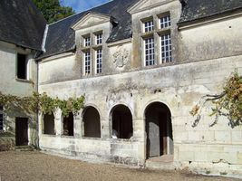
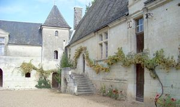
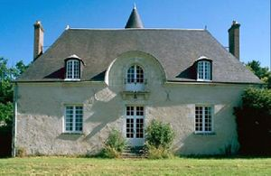

Recensement Jean-Claude Truffet
| Département | 37 — Indre-et-Loire |
| Canton | Château Renault |
| Commune | Saint Christophe sur le Nais |
| Type d'édifice | Château |
| Période d'origine | XV |







Deux châteaux à st- Christophe sur le Nais, Vaudésir et Gesnes. VAUDESIR, En 1532, René Bonamour, fait construire le château, il est décrit, comme "une grande maison garnie de sept cheminées, quatre tours au coin de la maison,et fossés", dans l'acte de vente de 1558, fait à M. François Massicault. Sa fille Jeanne le transmet à ses filles en 1593. Par le mariage d'une d'elles avec François Testu, Vaudésir devient la propriété de la famille Testu de 1625 à 1719. Au XVIIIe siècle Vaudésir eut pour propriétaire la famille Baudard (1719), Georges Latouche (1794). Au XIXe siècle, la famille de Sarcé (1810), Emmanuel de Tessecourt (1875), différents propriétaires se succèdent ensuite, jusqu'en 1970 où il est reçu en héritage par Mme Amiot, sa propriétaire actuelle. Trois bâtiments édifiés en comble et couverts d'ardoise, le bâtiment Est était composé au rez-de-chaussée d'un vestibule avec escalier et deux celliers, à l'extrémité de cette aile un escalier de bois à marches tournantes desservait l'aile Est et la galerie". La galerie comportait au rez-de-chaussée une chapelle. L'aile Ouest se composait d'un pavillon au Nord : chambre basse à cheminée et cabinet, au rez-de-chaussée et à l'étage. Cette disposition, est restée pratiquement inchangée. On remarque néanmoins que l'aile Nord était percé à l'origine, à l'étages, de baies en arc en plein cintre, dont des traces subsistent, et qu'elles ont été remplacées par des fenêtres à meneaux, surmontées d'un fronton, datant du premier tiers du XVIIe siècle. Certaines fenêtres, notamment sur le pavillon d'angle Nord-Ouest, étaient encore pourvues de grilles (jusque dans les années 1980) indiquant un aspect défensif encore nécessaire au XVIe siècle.
GESNES, Gesne qui appartenait à la famille Jean de Genetay est cédé pour la partie concernant le fief en 1604 à Philémon Voisin, et la métairie à Bernard Croyzé, avocat. En 1648, Pierre Dunoyer, bailli de Saint Christophe, acquiert la métairie, puis le fief, Lors du décès de Jean-Jacques Dunoyer en 1762,un inventaire dressé composée de deux pavillons et mansarde au milieu, En 1772, Gesnes est vendu à Jacques Etienne Bourgault Ducoudray, il est vendu en 1825 à Pierre Jacques Sylvestre Voisin, négociant à Château du Loir. La succesion d'Hercule Bourgault en 1825. En 1840 Gesnes fut vendu à un médecin Esprit Jean Gendron, dont la femme Henriette Boitard fut marraine en 1842 avec Louis de Sarcé de la cloche de Saint Christophe. Actuellement Gesnes est restée propriété des descendants de la famille Gendron qui a conservé l'unité architecturale de sa construction de la seconde moitié du XVIIe siècle. Ce bâtiment offre une composition symétrique Il est couvert d'un toit brisé en croupe, concernant le corps de logis, et d'un toit brisé en pavillon pour les deux pavillons. Il est composé d'un corps de logis percé d'une porte au centre et de quatre fenêtres, encadré par deux pavillons carrés à une travée, en léger décrochement de la façade principal. A l'extrémité Sud-Est est accolé une construction rectangulaire couverte d'un toit en pavillon, L'étage de comble est orné de lucarnes en pierre de taille surmonté d'un fronton cintré et triangulaire couronné d'une boule en pierre. Sur la façade antérieure, les deux lucarnes latérales ont été remplacées par deux oculus.
Vaudésir; Famille de François Testu Gesnes; famille Jean de Genetay
"
à st- Christophe sur le Nais, Vaudésir grav-2 à-6 et Gesnes grav-1. Gesnes 47° 37' 01" Nord, 0° 28' 36" Est Sion grav-7